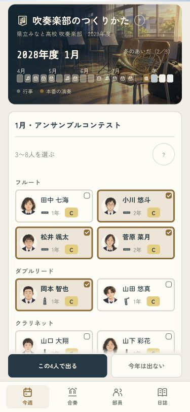
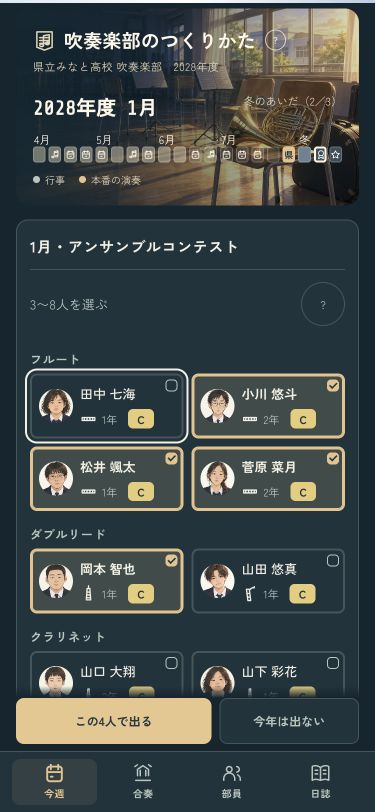
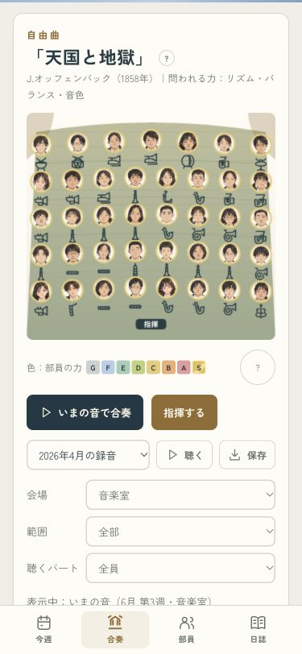
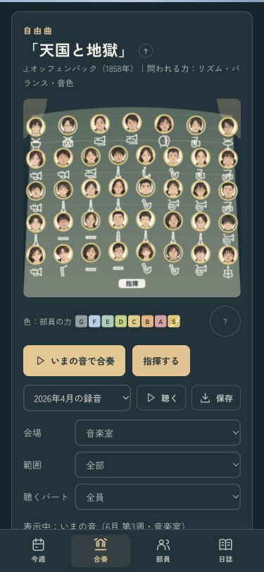
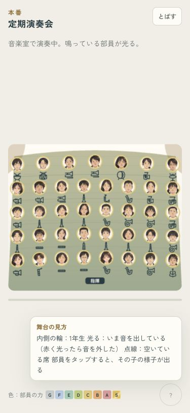
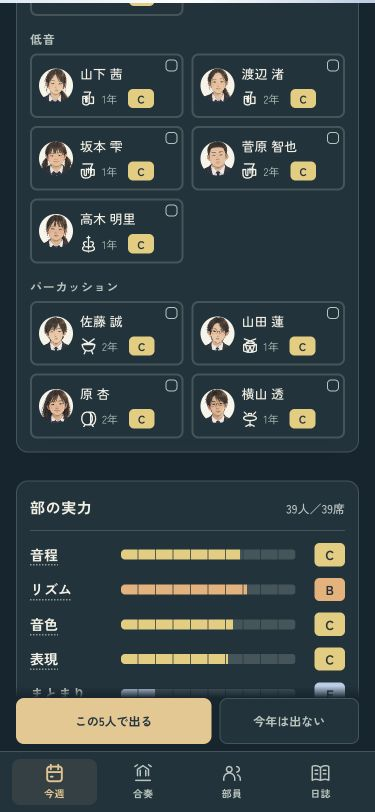

顔で選べるアンサンブル
顔・楽器・ランクを並べた2列のカード。金の線とチェックが選択中の目印です。選び直しても一覧が跳ねず、「この○人で出る」は画面下から押せます。くわしい説明は「？」へまとめました。
人選 · 375px
ライト · 田中七海さんを解除
ダーク · 田中七海さんを解除
演奏 · 375px
ランクの色は残し、舞台の見方は「？」から。オーボエとクラリネットの輪郭も描き分けました。
ライト
ダーク
本番の吹き出し
舞台の上で読める説明
一覧の最後も決定ボタンが手元に